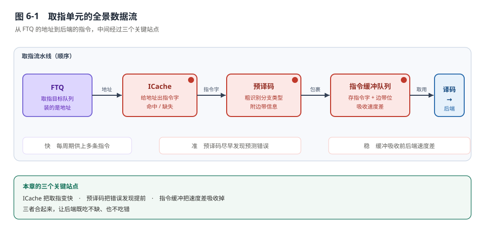
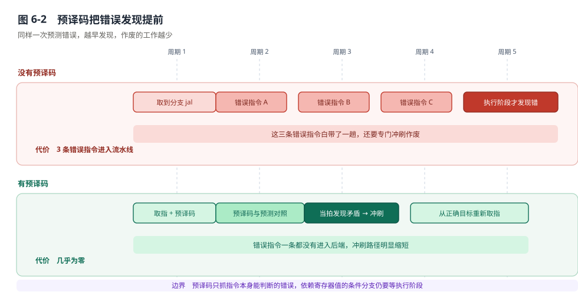
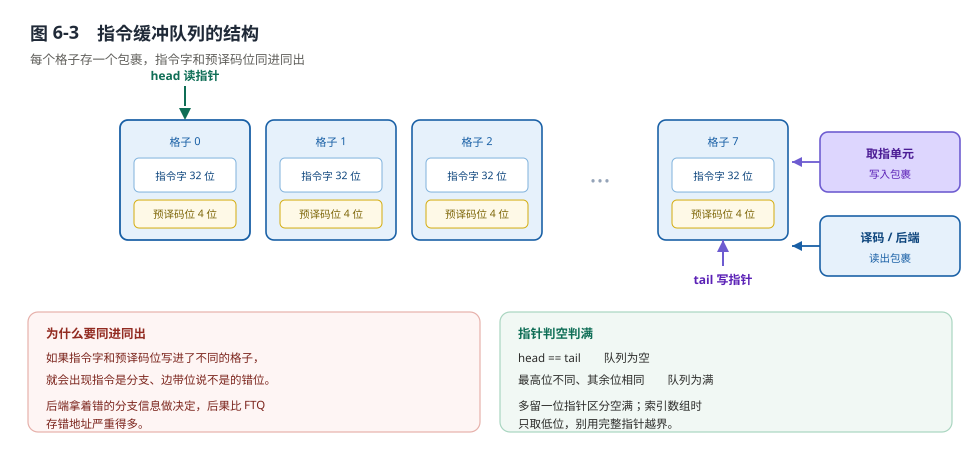
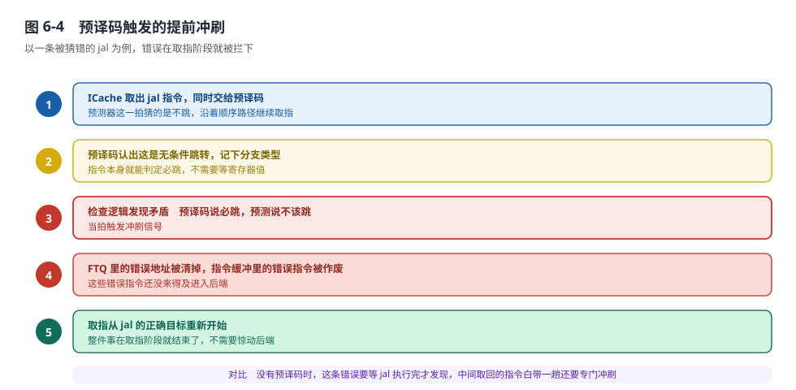

第 6 章 取指、预译码与指令缓冲
6.1 预测之后发生什么
上一章解决了一个问题：下一条指令去哪里取。预测器给出了目标地址，FTQ 把这个地址排在队里。接下来取指单元要做的事，就是把地址变成真正的指令字，检查一遍，然后交给后面。
这道工序听起来简单，其实要同时满足三个要求。
第一是快。乱序后端每周期能吃两条以上的指令，取指这边就得每周期供上同样多的指令。供不上，后端就得空转。
第二是准。取回来的指令如果走错了路径——预测猜错了——要尽早发现，越早发现，浪费的工作越少。
第三是稳。前端取指的速度和后端消费的速度不会完全一致。分支密集的时候取指变慢，指令 fusion 的时候后端吃得更快。中间需要一个缓冲把速度差吸收掉。
这一章就沿着取指单元的流水线走一遍，看这三个要求分别由谁来满足。图 6-1 是这一章的全景，先有个整体印象。

图 6-1 从 FTQ 拿地址，经 ICache 取出指令字，预译码附上边带信息，最后存入指令缓冲队列。红色标注的是本章的三个关键站点。
6.2 ICache 只要理解接口
取指的第一站是从存储器里把指令读出来。这个问题在五级流水线里就遇到过，那里我们假定指令存储器一个周期就能给出结果。真实处理器没这么奢侈：主存比 CPU 慢上百倍，如果每条指令都去主存取，处理器绝大部分时间都在等。
指令缓存（ICache）就是为了解决这个速度差。它的思想你已经在别的课程里学过：把最近用过的指令留在一块小而快的存储器里，下次要用的话直接命中。
本书不打算展开 ICache 的实现。组相联、替换策略、写分配这些是另一个完整的主题，讲起来能占掉半本书，而且和乱序执行的主线关系不大。这里只需要把它的接口记住：
- 给一个取指地址，命中时下一拍给出对应的指令字；
- 缺失时给出一个”没命中”信号，取指单元停下来等；
- 支持每周期读出多条连续指令，因为我们是多发射。
换句话说，把 ICache 当成一个”给地址出指令”的黑盒子就行。它内部有多复杂不影响本章要讲的东西。真正和乱序主线相关的，是取到指令之后的那一步——预译码。
6.3 为什么要提前看一眼
一条分支指令到底跳不跳，最晚要到执行阶段由分支单元算出来。但在五级流水线里，从取指到执行隔了三个周期。这三个周期里，后面已经又取了三条指令。如果分支最后跳了，这三条从错误路径上取回来的指令全都要作废。
流水线越深，这个代价越大。回想第 5 章那笔账：分支开销约等于分支频率乘错误率乘冲刷深度。前面两项我们靠预测器压低了，第三项——冲刷深度——能不能也缩短一点？
办法是尽早发现错误。既然预测器已经在取指阶段给出了预测结果，那就应该在取指阶段就检查这个结果是不是明显有问题。检查的前提，是先知道”这是一条分支指令”。
问题来了：完整的译码要等到译码阶段，而译码阶段在取指之后。等译完码再检查，已经晚了一拍。
预译码（predecode）就是为了抢这一拍。它在取指阶段对指令做一个很粗的扫描，只做译码的一小部分工作——识别出”这是不是分支、大概是什么类型”。这个粗识别用的电路比完整译码器简单得多，可以塞进取指流水线里而不拖慢它。
于是最快的错误发现路径变成了：取指的同时预译码，预译码一发现”这条是分支”，立刻把它的信息和预测结果对照；如果发现预测明显不成立（比如预测说跳，但这条其实是无条件不跳的指令），当拍就能发冲刷信号，后面一条错误指令都不用取。
图 6-2 对比了有没有预译码时，一次预测错误的发现时点。

图 6-2 没有预译码时，错误要到执行阶段才发现，中间取回的错误指令都要作废；有了预译码，取指阶段就能拦下一部分错误，冲刷路径明显缩短。
需要说明的是，预译码能拦下的只是”明显错误”——那些靠指令本身就能判断的情况。真正需要靠寄存器值才能决定的条件分支，还是得等执行阶段。所以预译码不是替代预测器，而是给预测器配了一个快速检查员，把能当场抓的错误当场抓住。
6.4 预译码记下什么
预译码不产出完整的控制信号，只记几个后面用得上的位。这些位跟着指令一起往后传，所以常被称为边带信息（sideband）。
最有用的几个位：
- 是不是分支。有了它，后面的检查逻辑才知道该对哪条指令核对预测结果。
- 分支类型。无条件跳转、条件分支、函数调用返回各有各的处理方式，提前分好类，后面就不用重复判断。
- 是不是控制流指令的边界。一段连续取的指令里，分支之后的那条可能就是另一个基本块的开始，标出来有助于后期切分。
这些位为什么非要提前记？两个原因。
一是省事。后面的每个模块如果都要自己从头认一遍指令类型，译码逻辑就得复制好多份。预译码算一次，大家共用。
二是及时。前面说过，错误发现得越早越好。分支信息在取指阶段就有了，检查才能赶在错误指令流进来之前发生。
有个细节值得留意：预译码记下的信息要和指令字严格对齐。取指一次取回好几条指令，每条都配一组边带位。如果指令在缓冲队列里被挪了位置，边带位必须跟着一起挪，否则就会出现”指令是分支、边带位说不是”这种错位。这一点在实现指令缓冲队列时要特别小心。
6.5 指令缓冲队列
取指单元和后端之间还有一个缓冲，叫指令缓冲队列（Instruction Buffer）。它和第 4 章的 FTQ 长得很像，都是先进先出的队列，但装的东西不一样。
FTQ 里装的是地址——预测器算出来的取指目标。指令缓冲队列里装的是指令本身，外加刚才说的那组预译码位。可以把它想成一排格子，每个格子里放一个”包裹”：里面是完整的指令字，外面贴着一张写着预译码结果的标签。取指单元从队尾往里放包裹，译码/后端从队头往外拿。
为什么需要它？还是速度差。取指这边遇到 ICache 缺失会停几拍，后端那边可能正在全速消费；反过来，后端遇到分支冲刷会突然不要指令了，取指这边还在源源不断往里送。队列的深度把两边的速度波动吸收掉，谁快谁慢都不会直接卡住对方。
图 6-3 画出了指令缓冲队列的结构，注意每个格子里指令字和预译码位的对应关系。

图 6-3 队列的每个格子存一个”指令字加预译码位”的包裹。写指针和读指针各自前进，两个指针的关系指示队列的空满。
这里有个和第 4 章 FTQ 相通、但更强调一点的地方：边带信息必须和指令一起进退。FTQ 里丢一个地址只是少取一条指令，指令缓冲里如果边带位错位，后果严重得多——后端会拿着错的分支信息做决定。所以这个队列在 push 和 pop 时，指令字和预译码位要写同一个格子、读同一个格子，不能分开管理。
6.6 走通一次提前冲刷
把前面几节串起来，看一次预译码提前发现预测错误的过程。
假设程序里有一条无条件跳转 jal，预测器却因为历史信息把它猜成了不跳。取指单元按预测结果，沿着顺序路径继续往下取。
- ICache 取出
jal这条指令，同时交给预译码。 - 预译码认出这是一条无条件跳转，记下”分支类型等于无条件跳”。
- 检查逻辑拿这个信息和预测结果一对：预译码说必跳，预测说不该跳，矛盾。
- 矛盾当拍就触发冲刷信号。FTQ 里排在后面的错误地址被清掉，指令缓冲队列里刚写进去的错误指令也被作废。
- 取指从
jal的正确目标重新开始。
整个过程在取指阶段就结束了，错误路径上一条指令都没流进后端。要是没有预译码，这条错误要等到 jal 执行完才发现，中间取回的几条指令白带了一趟，还得专门冲刷一遍。
图 6-4 是这次冲刷的时序。

图 6-4 预译码与预测结果对照发现矛盾，当拍发出冲刷，错误路径上的指令没有进入后端。
这个例子也说明了预译码的边界：它抓的是”指令本身就能判断”的错误，像无条件跳转这种。对于要看寄存器值才知道的条件分支，预译码帮不上忙，还得靠第 14 章要讲的重定向机制来处理。
6.7 几个关键权衡
这一章有几个地方体现了设计上的取舍，值得停下来想一想。
预译码要做到多细。 识别得越细，能提前拦下的错误越多，但电路越复杂、越可能拖慢取指这一拍。工程上通常只做最便宜的识别——操作码级别的分类，不做完整的译码。这是一条典型的性价比曲线：前一点点投入换来大部分收益，再往下投入回报递减。
指令缓冲队列做多深。 深了能吸收更大的速度波动，但面积和延时都涨。太深还会让冲刷时要作废的指令变多，恢复变慢。这里的权衡和第 4 章 FTQ 深度的取舍是同一类问题。
边带信息存多少位。 少存几位省面积，但后面模块就要重复计算；多存几位省了后面的事，队列本身变宽。原则是：只存那些”算一次大家都用、且需要尽早拿到”的信息。
取指宽度和发射宽度怎么配。 取指一次取四条，后端一拍吃两条，多出来的暂时存着，看起来没问题。但分支密度高的时候，一个周期取回的四条里可能有两条在分支之后，实际有效的只有两条，刚好够用。所以算带宽时要把分支密度这个折扣算进去，这一点第 4 章已经提过。
6.8 指令缓冲队列的代码实现
现在把指令缓冲队列落到代码里。它是本章唯一需要动手写的模块，也是”边带信息随指令流动”这条原则的具体体现。和上一章 FTQ 相比，这里多了一个新东西：每个格子要同时存指令字和预译码位，两者不能分家。
6.8.1 先看接口
还是把它当黑盒子，谁要用什么信号，就往接口里加什么。
第一步，取指单元要把指令放进来。 那就需要一个写使能，加一个要写的指令字。
module inst_buffer #(
parameter DATA_W = 32,
parameter PREDEC_W = 4
)(
input push,
input [DATA_W-1:0] push_inst
);push_inst 是指令字，PREDEC_W 是预译码位的宽度，先放在参数里。
第二步，预译码位得跟着指令一起进来。 边带信息不能丢，所以再加一组输入，和指令字同一拍有效。
input [PREDEC_W-1:0] push_predec这里 push_predec 和 push_inst 是一对的：push 有效时，两者一起写进同一个格子。这个”成对”的关系是本章的核心，写代码时不许把它们拆到两个地方存。
第三步，后端要把指令取走。 加读使能和读出的两个信号，同样是成对的。
input pop,
output [DATA_W-1:0] pop_inst,
output [PREDEC_W-1:0] pop_predec读的时候，指令字和预译码位从同一个格子一起出来，后端拿到的永远是一配一的包裹。
第四步，满了要能喊停。 取指单元得知道队列还有没有空位，加一个 full。
output full第五步，空了也要喊停。 后端取指前要确认队列里确实有东西，加一个 empty。
output empty第六步，指针要能复位、要有时钟推着走。 最后补上时钟和复位。
input clk,
input rst_n
);接口定稿。 六步攒下来的完整端口列表如下。
module inst_buffer #(
parameter DEPTH = 8,
parameter DATA_W = 32,
parameter PREDEC_W = 4
)(
input clk,
input rst_n,
input push,
input [DATA_W-1:0] push_inst,
input [PREDEC_W-1:0] push_predec,
input pop,
output [DATA_W-1:0] pop_inst,
output [PREDEC_W-1:0] pop_predec,
output full,
output empty
);回头看，每个信号都有明确的来路：写的一对、读的一对、两个状态标志、时钟复位。没有哪个信号是凭空冒出来的。这就是接口渐进的好处——读者知道每一行为什么在那儿。
6.8.2 再看实现
接口定了，接下来填内部。这里的关键和第 4 章 FTQ 一脉相承，只是格子里的东西从一个地址变成了一个包裹。
第一步，要有地方存。 开两个数组，一个存指令字，一个存预译码位，用同一个下标访问。再加读写两个指针。
localparam PTR_W = $clog2(DEPTH) + 1; // 多一位用于判满
localparam DM = DEPTH - 1; // 存储器上界，先转 localparam
reg [DATA_W-1:0] inst_mem [0:DM];
reg [PREDEC_W-1:0] predec_mem [0:DM];
reg [PTR_W-1:0] head, tail;
wire [PTR_W-1:0] next_tail = tail + 1'b1; // 推指针时用两个数组用同样的下标 DM，读写时用同一个指针索引——这就是”包裹不拆家”在代码里的落实。PTR_W 比普通指针多一位，原因下一小步就说。next_tail 是在旧指针上加一，留给推进指针时用。
第二步，怎么知道空了。 读写指针相等时队列为空，这个判断和第 4 章一样。
assign empty = (head == tail);第三步，怎么知道满了。 如果指针只有 3 位、深度 8，写满 8 个之后 tail 绕回 0，就会和”空”撞在一起分不清。多留一位后，写满时 tail 比 head 多绕了一整圈，最高位翻转而其余位相同，于是”最高位不同、其余位相同”就是满。
assign full = (head[PTR_W-1] != tail[PTR_W-1])
&& (head[PTR_W-2:0] == tail[PTR_W-2:0]);这里有个容易写错的地方：判满要用当前的 tail，不要用 tail + 1。如果用加了一之后的值去比，队列写到第 7 个就报满，深度会平白少一格。第 4 章的 FTQ 也是用当前 tail 判满的，两处道理相同。
第四步，指针要能推进。 push 时写包裹、推 tail；pop 时读包裹、推 head。两个 if 并列写，这样读写同拍也能各走各的。
always @(posedge clk or negedge rst_n) begin
if (!rst_n) begin
head <= {PTR_W{1'b0}};
tail <= {PTR_W{1'b0}};
end else begin
if (push && !full) begin
inst_mem [tail[PTR_W-2:0]] <= push_inst;
predec_mem[tail[PTR_W-2:0]] <= push_predec;
tail <= next_tail;
end
if (pop && !empty) begin
head <= head + 1'b1;
end
end
end注意索引用的是 tail[PTR_W-2:0] 而不是完整的 tail。第 4 章踩过这个坑：写满时 tail 会等于 8，直接用完整指针去索引深度 8 的数组就越界了，读出一片 x。多出来的最高位只用于判满，不能当数组下标。
读出的部分单独写，用连续赋值直接取当前 head 指向的格子。
assign pop_inst = inst_mem [head[PTR_W-2:0]];
assign pop_predec = predec_mem[head[PTR_W-2:0]];第五步，拼成完整模块。 把接口和实现合起来，就是 code/verilog/06_fetch/inst_buffer.v。这里不再重复贴一遍，读者可以对照着看。
6.8.3 和 FTQ 的异同
值得把这一章的指令缓冲队列和第 4 章的 FTQ 放在一起比一比。
相同的是骨架：都是先进先出队列，都用多一位指针判空判满，都要处理读写同拍，索引都要取低位。这套 FIFO 的手艺是通用的，学会一次两处都能用。
不同的是格子里装的东西：FTQ 存的是取指地址，一个标量；指令缓冲队列存的是指令字加预译码位，一组捆绑的信号。这个差别带来一个额外要求——捆绑的信号必须同进同出。FTQ 里地址写错位置只是少取一条，指令缓冲里边带位和指令字错位，后端就会拿着错的分支信息做决定。所以本章反复强调”包裹不拆家”。
6.9 图形与实验
图 6-1 是全景，适合对照本章开头读，把取指单元在整条流水线里的位置摆正。图 6-2 讲预译码为什么能提前发现错误，图 6-4 是它触发冲刷的完整时序，两张配合看最容易理解。图 6-3 是指令缓冲队列的结构，重点看每个格子里指令字和预译码位的对应关系。
另外有一个可以在 Digital 里打开的小电路 code/digital/06_predecode_detect.dig，它做的是预译码最底层的一步：拿指令的操作码和分支操作码比较，判断是否分支。拨动输入，看 is_branch 信号什么时候亮起。Digital 适合表达这种落到门电路上的局部判断，完整的取指流水线和数据流则用 SVG 分层图更清楚。
Verilog 实验在 code/verilog/06_fetch/，inst_buffer.v 是指令缓冲队列，tb_inst_buffer.v 是自测程序。建议先跑一遍仿真，再对照 6.8 节看代码是怎么一步步长出来的。可以试着把 DEPTH 改成 4，看看满标志的行为有什么变化。
6.10 香山一瞥（选读）
香山的取指前端比这里的教学模型复杂得多，但几个思想能对上。
它有专门的预译码逻辑，在取指阶段就为每条指令附上若干标志位，其中就包括分支相关信息。这些位沿着流水线传递，供后续的分支预测检查和译码使用。这个”边取边打标签”的做法，和本章讲的预译码是一回事，只是打的标签种类更多。
香山也用了多级缓冲来吸收前后端速度差，FTQ 存取指目标，指令缓冲存取回的指令，各管一段。理解本章这两个队列的分工，再看香山的前端结构就不会迷路。
至于预译码具体打哪些标签、缓冲队列具体多深，这些是工程取舍，本书不展开。有兴趣的读者可以顺着”前端预译码”这个线索去读香山文档。
6.11 小结
这一章沿着取指单元的流水线走了一遍。
ICache 把”给地址出指令”这件事变快，本章只用了它的接口，没有陷入缓存实现。预译码在取指阶段就粗粒度地识别分支，让预测错误能被尽早发现，缩短冲刷路径——但它只抓”指令本身就能判断”的错误，其余的留给后面的重定向机制。指令缓冲队列存的是指令字加预译码位组成的包裹，吸收前后端速度差，并且必须保证边带信息和指令同进同出。
代码部分按接口渐进的方式搭出了指令缓冲队列：先有写的一对信号，再有读的一对，再加空满标志和时钟复位，接口定稿后才填内部实现。这套 FIFO 手艺和第 4 章 FTQ 通用，差别只在于格子里装的是包裹而不是标量。
一句话记住本章：前端做三件事，把指令取上来、提前看一眼、稳妥地暂存好，缺一样后端就吃不饱或吃错。
6.12 思考题
- 预译码为什么只做操作码级别的粗识别，而不直接做完整译码？如果把完整译码搬进取指阶段，会带来什么问题？
- 本章说预译码能缩短冲刷路径，但它抓不住依赖寄存器值的条件分支。为什么抓不住？这类错误最终靠什么机制处理？
- 指令缓冲队列里，如果预译码位和指令字在 push 时写进了不同的格子，会出现什么后果？为什么说这比 FTQ 存错地址更严重？
- 队列指针为什么要多留一位？如果深度改成 16，指针需要几位？索引数组时又该取哪几位？
- 取指一次取四条指令，但一个周期里可能遇到分支，分支之后的指令其实走错了路径。为什么说计算有效取指带宽时要把分支密度算成折扣？